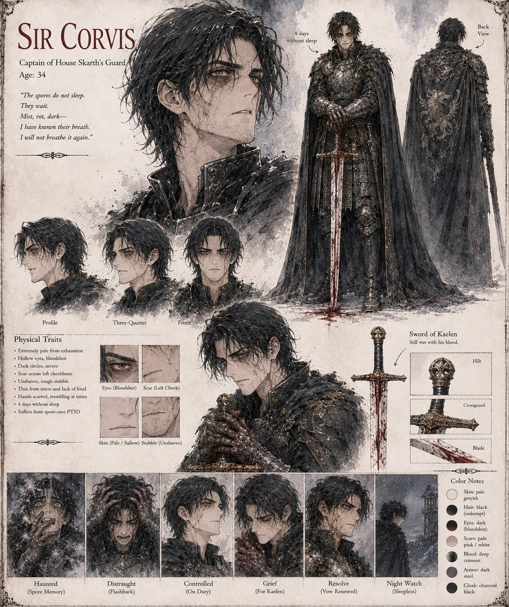

Corvus
Sir Corvus · knight of the King's own bodyguard
Knight of the King's own bodyguard — and, since a cave outside a border keep eleven months earlier, a man who can no longer fully separate the present from the year afterward, when he could not lift a spoon to his mouth without spilling the broth. Grey spore-dust, someone's breathing stopping beside him in the dark: by the eleventh night of the hunt he has not slept in four nights, and when Kaelen unscrews the flask and the broth unrolls into a white cloud, his whole body turns toward the sound of metal on metal before his mind is consulted. He kills Kaelen before the cup reaches the King. He serves another six years in the royal bodyguard, competently and without complaint, then lives eleven more alone on a small holding in the King's gift — a man who did the arithmetic more times than anyone should be asked to, and never once made it come out even.
“The spores do not sleep. They wait. Mist, rot, dark — I have known their breath. I will not breathe it again.”
Appears in The Thermal Vessel War